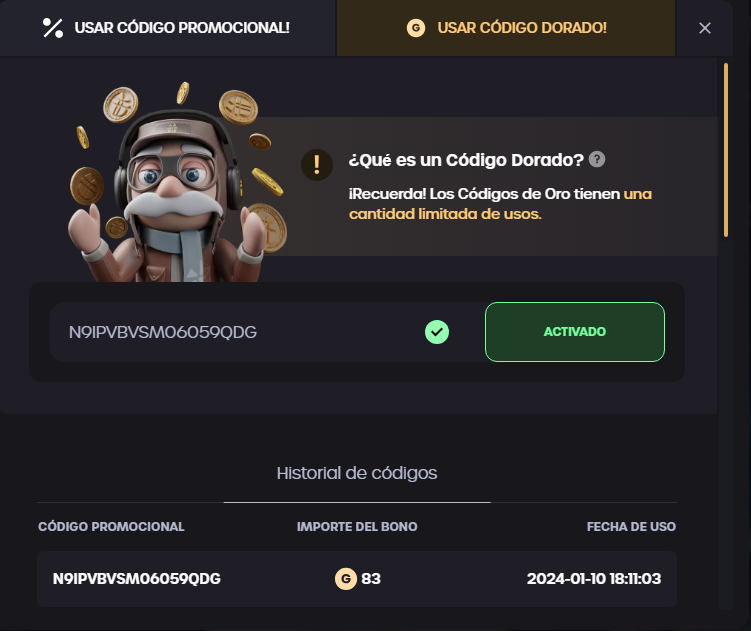
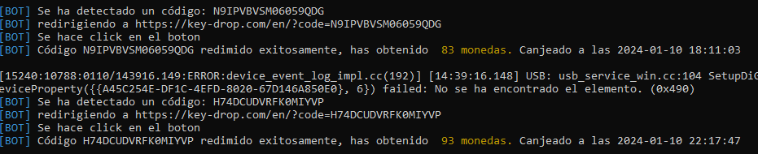

Este proyecto fue descontinuado. Keydrop modificó su sistema de detección y los cambios requeridos para mantener la compatibilidad superaron el alcance del proyecto. Se conserva como referencia de aprendizaje en automatización web y desarrollo de bots con Discord.
Canjeo automático de códigos
El bot monitoreaba un canal de Discord en tiempo real. Al detectar un código dorado, navegaba automáticamente a Keydrop.com, sorteaba el sistema anti-captcha mediante Undetected ChromeDriver y ejecutaba el canjeo en segundos, sin intervención humana y a cualquier hora del día.

Logs en tiempo real vía Discord
Cada acción del bot quedaba registrada en el canal de Discord configurado: detección del código, redirección, activación y confirmación del canjeo con el importe obtenido.
- Instalación sencilla mediante dependencias de Python
- Canjeo instantáneo de códigos de oro de usos limitados
- Bajo consumo de recursos gracias a
asyncio - Login persistente por sistema de cookies

¿Querés ver más proyectos?
Ver portfolio completo